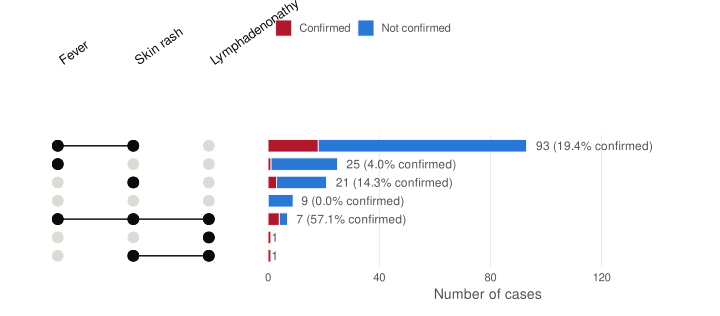
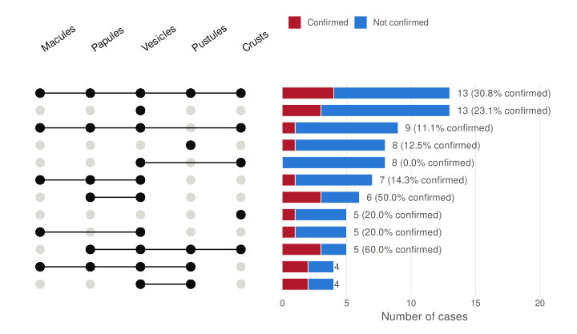

Symptom analysis
Data for W43-2026, updated 19 Oct 2026
This page compares the clinical signs of the 33 confirmed cases and the 148 suspected cases that were not confirmed (negative RT-PCR). The 0 cases awaiting a result are excluded. A “no information” answer is never counted as “no”: the case is left out of the calculation for that symptom.
Frequency of each symptom
How to read: each line joins the frequency of a symptom among non-confirmed cases (blue) and confirmed cases (red). The wider the gap, the better the symptom separates confirmed cases. The odds ratio (OR) measures this association: an OR above 1 means the symptom is more frequent among confirmed cases. With 33 confirmed cases the confidence intervals are wide, and a non-significant difference (p ≥ 0.05) does not show that there is no association.
Combinations of main signs
Combinations of fever, skin rash and lymphadenopathy, among cases with all three signs recorded.

How to read: each row is a combination of signs (joined black dots); the bar gives the number of cases with that combination, split into confirmed (red) and not confirmed (blue). The share confirmed is shown only from 5 cases upwards. Analysis of 169 cases (12 excluded for missing information on one of the three signs).
Combinations of lesion types
Stages of skin lesions (macules, papules, vesicles, pustules, crusts) among cases with a rash.

How to read: classically, mpox lesions progress at the same pace, whereas chickenpox lesions appear at different stages at the same time; but during the global clade IIb outbreak of 2022, lesions at different stages were often seen in mpox cases. Lesion stage alone therefore cannot tell the two diseases apart. Analysis of 114 cases with a rash (22 excluded for missing information on one of the lesion types). The 12 most frequent combinations are shown.
How well each sign predicts confirmation
How to read: sensitivity is the share of confirmed cases that had the sign; specificity, the share of non-confirmed cases that did not. The positive predictive value (PPV) is the probability that a case with the sign is confirmed, in the population tested here: it depends on the positivity rate (18.2%) and does not carry over to another population. These indicators help assess the case definition.